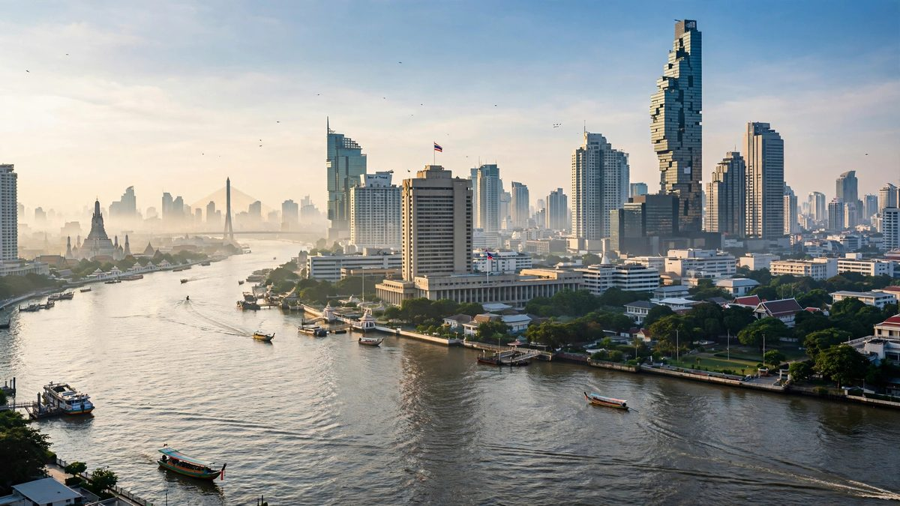

बैङ्ककमा IMF सदस्यहरूले युद्धको असरबीच बढी सहयोग मागे
कोषको सञ्चालन समितिले जोखिम अझै तलतिरै रहेको, युद्ध र महँगो ऊर्जाले गरिब देशहरूलाई निचोरिरहेको, र AI को नामले पनि विवाद निम्त्याएको बतायो।

मुख्य बुँदाहरू
- अन्तर्राष्ट्रिय मुद्रा कोषका सदस्य देशहरूले शनिबार युद्ध र महँगो ऊर्जा मूल्यबाट पीडित देशहरूका लागि बढी सहयोगको माग गरे, र विश्व अर्थतन्त्रमा जोखिम अझै तलतिरै रहेको बताए।
- यो आह्वान बैङ्ककमा अन्तर्राष्ट्रिय मौद्रिक तथा वित्तीय समितिको बैठकपछि अध्यक्षको बयानमार्फत आयो। समितिले १९१ सदस्य भएको सङ्कट ऋणदाता IMF लाई सञ्चालन गर्छ। यसका अध्यक्ष साउदी अर्थमन्त्री मोहम्मद…
- "बढ्दो द्वन्द्व र व्यापार तनावले महत्त्वपूर्ण व्यापार मार्गहरू थप बिगार्न सक्छ, वस्तु मूल्यको दबाब बढाउन सक्छ, प्रशोधित ऊर्जा उत्पादनसहित, र ऊर्जा र खाद्य सुरक्षा बिगार्न सक्छ," बयानमा भनिएको छ।
अन्तर्राष्ट्रिय मुद्रा कोषका सदस्य देशहरूले शनिबार युद्ध र महँगो ऊर्जा मूल्यबाट पीडित देशहरूका लागि बढी सहयोगको माग गरे, र विश्व अर्थतन्त्रमा जोखिम अझै तलतिरै रहेको बताए।
यो आह्वान बैङ्ककमा अन्तर्राष्ट्रिय मौद्रिक तथा वित्तीय समितिको बैठकपछि अध्यक्षको बयानमार्फत आयो। समितिले १९१ सदस्य भएको सङ्कट ऋणदाता IMF लाई सञ्चालन गर्छ। यसका अध्यक्ष साउदी अर्थमन्त्री मोहम्मद अल-जदान हुन्, जसले बयानका शब्द सबै सदस्यले स्वीकार गरेको रोयटर्सलाई बताए।
"बढ्दो द्वन्द्व र व्यापार तनावले महत्त्वपूर्ण व्यापार मार्गहरू थप बिगार्न सक्छ, वस्तु मूल्यको दबाब बढाउन सक्छ, प्रशोधित ऊर्जा उत्पादनसहित, र ऊर्जा र खाद्य सुरक्षा बिगार्न सक्छ," बयानमा भनिएको छ।
कसलाई सहयोग चाहिन्छ
सदस्यहरू युद्ध र महँगो ऊर्जा मूल्यको नकारात्मक असरबाट अल्पकालीन वित्तीय समस्या भोगिरहेका देशहरूका लागि बढी सहयोग चाहन्छन्। सिधा भाषामा, युद्ध सुरु नगर्ने देशहरूले त्यसको मूल्य चुकाइरहेका छन्, इन्धन बिल, खाना बिल र ऋण लागतमार्फत, र कोषलाई उनीहरूका लागि छिटो कदम चाल्न भनिएको छ।
बाहिरबाट हेरिरहेका अर्थ मन्त्रालयहरूका लागि व्यावहारिक परीक्षा गति हो। आफूले निम्त्याएको नभएको इन्धन र खाना मूल्यले निचोरेको देशलाई छोटो अवधिको कसाइ ऋण सङ्कट बन्नुअघि नै कोषको पैसा चाहिन्छ। बयानले कोषलाई त्यसका लागि तयार रहन भन्छ, र चेतावनी दिन्छ कि धनी अर्थतन्त्रहरूका उच्च बन्ड यिल्डले सबैभन्दा गरिब ऋणदाताहरूबाट पैसा र चाल चलाउने ठाउँ खोसिरहेको छ।
दुई शब्दमाथि झगडा
बयानले नयाँ प्रविधिको पनि चर्चा गर्यो। यसले लगानी र व्यापारले उन्नत बुद्धिमत्ता प्रविधिबाट प्रोत्साहन पाएको, र ती प्रविधिले जोखिम पनि ल्याउने बताएको छ। प्रविधिको अनिश्चित असर, ठूला अर्थतन्त्रहरूमा बढ्दो बन्ड यिल्डसँगै, जसले ऋणमा डुबेका अर्थतन्त्रहरूलाई असर गर्छ, समग्र वित्तीय कमजोरीलाई बढाउन सक्छ, बयानमा भनिएको छ।
यो शब्दावली पछाडि नामको विवाद छ। यही हप्ता अघि अमेरिकाले अन्य IMF सदस्यहरूलाई बयानमा कृत्रिम बुद्धिमत्ताको नाम सुपर इन्टेलिजेन्स राख्न दबाब दिएको थियो, राष्ट्रपति डोनाल्ड ट्रम्पले रुचाउने नामअनुसार, एक वरिष्ठ अमेरिकी ट्रेजरी अधिकारीले रोयटर्सलाई बताए। अन्तिम संस्करणमा कृत्रिम बुद्धिमत्ताको कुनै उल्लेख नै छैन। त्यसको सट्टा सहमत भएको वाक्यांश प्रयोग गरिएको छ।
बाँकी चेतावनी सूची
बयानले द्रुत प्राविधिक परिवर्तन, जनसाङ्ख्यिकीय बदलाव, बढी बारम्बार हुने चरम मौसम र प्राकृतिक प्रकोप, र भू-आर्थिक विखण्डनले नीति निर्माताहरूको निर्णय जटिल बनाइरहेको बताएको छ। यिनीहरूमध्ये कुनै पनि एक्लै नयाँ होइन। बैङ्ककमा १९१ सदस्यको साझा बयानमा सँगै, यसले IMF र विश्व बैङ्क बैठक हप्ताको सुर निर्धारण गर्छ।
स्रोत
रोयटर्स र रोयटर्स via SRN News, माथि लिङ्क गरिएको छ।